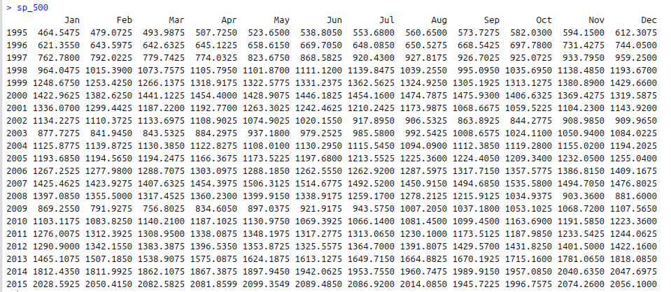
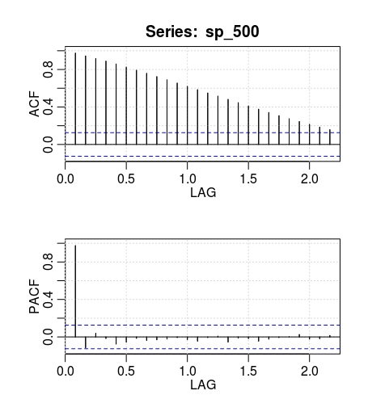

Contributors: David A. Campos, Raul Eulogio, Kim Specht, Nathan Fritter.
Languages: R, JavaScript.
Published on: June 2016.
Project Summary
This project focuses on finding the best statistical-learning model to predict future values for the S&P 500 Stock Index.
Understanding the S&P 500 Stock Index is highly-relevant in understanding the health of the U.S. economy as it is highly-correlated (statistically) with other U.S. economic indicators such as other stock indices (e.g. the NASDAQ Stock Index and the NYSE Stock Exchange), the U.S. Housing Price Index, and the U.S. Gross Domestic Product (U.S. GDP).
Time-series analysis is a basic concept within the field of statistical-learning, which is appropriate for the analysis of the S&P 500 Stock Index.
In this project, we carry out this statistical analysis with the power of R and deliver some browser-rich visualizations using with the elegance and flare of the JavaScript libraries d3.js, Plotly, and Shiny.
We encourage you to try replicating this project and make your own contributions! You can fork this project on GitHub.
Steps:
-
Load packages
-
Get Data
-
Do Exploratory Analysis
-
Build Models
-
Derive Conclusions
Requirements:
-
Basic working knowledge of the R programming language, statistics (including time-series analysis), and economics (finance).
-
R software environment.
Load Packages
First, we want to load the appropriate packages into our R environment.
For this we use the required() method and include the package names as arguments. Make sure to first install the packages using the install.packages("") method if you haven't done so already.
require(data.table)
require(ggplot)
require(astsa)
require(car)
require(caret)
require(plotly)
!!!!! -----> TALK ABOUT THE RELEVANCE OF THESE PACKAGES.
Get Data
Collecting Data
Now we collect our data. We want to use reliable sources of complete and accurate data. We collected 21 years (1995-2015) of S&P 500 Stock Index data at a monthly frequency (a total of 252 observations) from Yahoo Finance. You can do the same too.
Cleaning Data
We cleaned our data manually using google sheets. For this we made sure that all fields contained data (i.e. no missing values) and that the headers (i.e. column names) were labeled appropriately. This can be done programmatically with R, but this is outside of the scope of this project.
We also included a bunch of other variables (for exploratory analysis) such as the NASDAQ Stock Index, the NYSE Stock Exchange, the U.S. Housing Price Index, and the U.S. Gross Domestic Product. Here is our data in file data_master_1.csv, which is ready to be used with R.
Loading Data
Then we must include our data set within our working R environment. For this we use:
dataMaster <- read.csv(" ...{PATH_TO}... /data_master_1.csv")
attach(dataMaster)
Now we can call our S&P 500 Stock Index data by typing dataMaster$sp_500 into our terminal.
Do exploratory analysis
Before trying to run any models we want to get a feel for our data. For this we do some exploratory analysis.
!!!!! -----> LIST QUICK SUMMARY OF EXPLORATORY ANALYSIS METHODS.
Creating time-series data object
S&P 500 data is in the form of time-series. In R we are able to create time-series objects for our data vectors using the ts() method. For this, we select the vector we would like to use as the first argument, and tune the start and freq (frequency) parameters. Then we output the time-series data to the terminal by calling our newly-created time-series object.
sp_500 <- ts(dataMaster$sp_500, start=c(1995, 1), freq=12)
sp_500

Plotting time-series data object
Below, we are plotting our time series data of the S&P 500 STOCK INDEX using plotly. You can plot this within R using this script:
plot.ts(sp_500)
Outputting ACF and PACF PLOTS FOR ORIGINAL TIME-SERIES
!!!!! -----> WHAT IS THE RELEVANCE OF THE ACF AND PACF PLOTS?
someCode() !!!!! -----> LIST CODE FOR RUNNING ACF AND PACF

!!!!! -----> WHAT DO THE ACF AND PACF TELL US ABOUT NEXT STEPS IN OUR EXPLORATORY ANALYSIS AND/OR STATISTICAL-MODELING?
Build models
!!!!! -----> HOW DO WE START OUR STATISTICAL MODELING FROM WHAT WE LEARNED IN THE EARLIER STAGE?
someCode() !!!!! -----> WHAT CODE DO WE USE TO RUN THIS MODEL?
ARIMA Model: Checking residuals to be white noise using histogram (training set size: 240)
ARIMA Model: One-year Forecast vs. Actual Values of S&P 500 (Jan 2015 - Dec 2015)
ARIMA Model: Checking residuals to be white noise using histogram (training set size: 228)
ARIMA Model: Two-year Forecast vs. Actual Values of S&P 500 (Jan 2014 - Dec 2015)
BOX-COX Model: Checking residuals to be white noise using histogram (training set size: 240)
BOX-COX Model: One-year Forecast vs. Actual Values of S&P 500 (Jan 2015 - Dec 2015)
Derive Conclusions
Our conclusion is that the ARIMA model is the best fit for our S&P 500 data set, and yields the best prediction for future values.